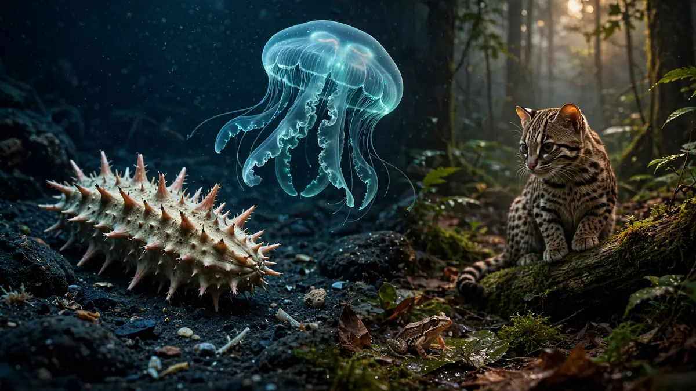
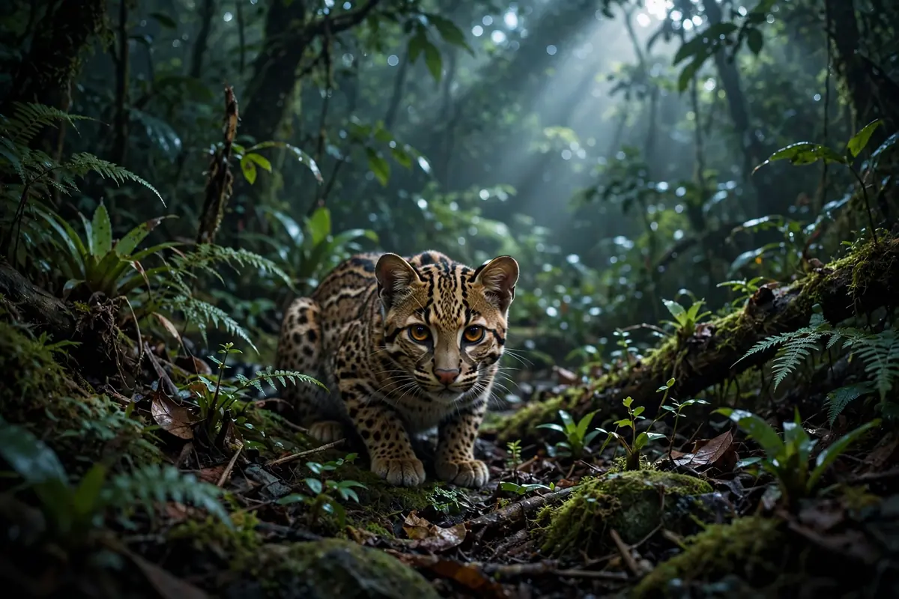

Ela é pequena, marrom e se camufla na serapilheira como poucas. Mas a rã que pesquisadores brasileiros e equatorianos acabam de descrever é oficialmente uma espécie nova para a ciência: Adenomera varcena. O nome faz referência direta ao seu lar — as florestas de várzea da Amazônia ocidental, áreas que alagam todos os anos com a cheia dos rios. A descrição foi publicada em setembro de 2026 na revista Ichthyology (2026;114(2):204, DOI 10.1643/h2025033), com apoio da FAPESP.
Numa floresta que abriga milhares de espécies de anfíbios, encontrar uma rã nova pode parecer rotina. Não é: cada descrição como essa é o resultado de anos de trabalho de campo, análise de DNA e comparação minuciosa — e cada uma muda um pouco o mapa da biodiversidade amazônica.
A descoberta na várzea amazônica
A equipe reuniu pesquisadores da UFMG, UNESP, USP e UFU, no Brasil, e da PUCE-Quito, no Equador — uma colaboração internacional típica da ciência amazônica moderna, que cruza fronteiras porque a floresta também as cruza. O trabalho de campo levou os cientistas às florestas de várzea da Amazônia ocidental, ecossistemas sazonais que passam meses submersos e meses emersos.
Foi nesse ambiente de extremos que a Adenomera varcena foi encontrada. O epíteto varcena homenageia a várzea, o habitat onde ela vive — uma escolha que já diz muito sobre a ligação da espécie com esse ecossistema tão particular.
O ninho de espuma: berçário engenhoso
A Adenomera varcena é uma rã terrestre de ninho de espuma. Em vez de depositar os ovos diretamente na água, como muitas rãs fazem, as fêmeas do gênero Adenomera constroem ninhos de espuma — uma massa aerada que protege os ovos e os girinos da dessecação e de predadores.
É uma estratégia engenhosa para a várzea: num ambiente onde o nível da água sobe e desce drasticamente, o ninho de espuma oferece um berçário estável e portátil. Os girinos se desenvolvem protegidos até estarem prontos para a vida na floresta alagada. Pequena em tamanho, a rã carrega uma das soluções reprodutivas mais sofisticadas entre os anfíbios.
Como os pesquisadores a diferenciaram
Distinguir uma espécie nova de rã na Amazônia é um trabalho de detetive. Muitas espécies do gênero Adenomera são parecidas entre si — o que os biólogos chamam de espécies crípticas: diferentes no DNA e em detalhes sutis, mas quase idênticas aos olhos. A equipe combinou morfologia (medidas do corpo, padrões de cor, formato), bioacústica (o canto dos machos, que funciona como "impressão digital" sonora) e genética para confirmar que a varcena era de fato uma espécie à parte.
Esse rigor é o que separa uma descrição sólida de um palpite: a publicação na Ichthyology passou por revisão de outros especialistas antes de oficializar o nome. A partir de agora, Adenomera varcena existe oficialmente nos catálogos da biodiversidade.
Por que a taxonomia importa para a conservação
Pode parecer um exercício acadêmico dar nome a uma rã marrom de poucos centímetros. Mas a taxonomia é a base de toda a conservação: leis de proteção, listas de espécies ameaçadas e unidades de conservação dependem de saber exatamente quais espécies existem e onde vivem.
As várzeas amazônicas estão entre os ecossistemas mais ameaçados da floresta — pressionadas por desmatamento, hidrelétricas e mudanças no regime das cheias. Uma espécie descrita agora ganha um nome, uma distribuição conhecida e a chance de entrar nos planos de proteção. Sem a descrição formal, ela seria apenas "mais uma rã marrom" — invisível para as políticas públicas.
O que vem a seguir
Com a descrição publicada, os próximos passos incluem mapear com mais precisão a distribuição da Adenomera varcena, estudar sua ecologia — como ela usa a várzea ao longo do ciclo de cheias — e avaliar seu estado de conservação. Os pesquisadores ainda analisam o material coletado, e é provável que o gênero Adenomera esconda outras espécies crípticas esperando descrição.
A Amazônia segue lembrando a ciência de uma verdade simples: mesmo no bioma mais estudado do planeta, ainda há rãs novas cantando na serapilheira, esperando alguém que saiba ouvir.
Perguntas frequentes
Conclusão
Pequena, marrom e mestra da camuflagem, a Adenomera varcena agora tem nome, endereço e lugar garantido nos catálogos da ciência. A descrição dessa rã da várzea é mais uma prova de que a Amazônia ainda está sendo inventariada — e de que cada espécie nomeada é uma ferramenta a mais para protegê-la. Compartilhe esta descoberta e ajude a espalhar a notícia: a maior floresta tropical do mundo ainda tem segredos para contar.
Artigos relacionados

As 5 descobertas de animais mais surpreendentes de 2026 (retrospectiva)
Do pepino-do-mar "Loki" à equidna reaparecida após 62 anos: os achados da fauna que mais deram o que falar este ano.

O primeiro felino novo em 100 anos: o gato que se separou há 1,4 milhão de anos
A genômica moderna revelou o Leopardus tilcayo, um felino sul-americano que a ciência levou um século para reconhecer como espécie nova.

Reaparece após 62 anos: a equidna de Attenborough que a ciência julgava perdida
Fotografada pela primeira vez em 62 anos nas montanhas Cíclopes, a Zaglossus attenboroughi é um dos mamíferos mais raros do mundo.